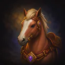
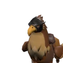
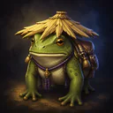
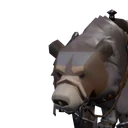
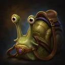
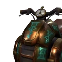
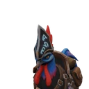

Guide Montures · Patch v0.34.0
Sept montures existent dans le jeu : une s'achète, six se gagnent sur des boss. Qui donne quoi, à quel taux, et laquelle viser d'abord — tous les chiffres sont vérifiés dans le code du jeu.
Une monture, c'est un objet : les rênes. Tu les gardes au sac, tu les mets en barre d'action, un clic et tu montes. Depuis la v0.34.0, les rênes s'échangent : échange direct, courrier, Marché, banque de guilde. Seules deux choses restent bloquées (pour te protéger des fausses manips) : la vente à un vendeur PNJ, et la poubelle. Changer de monture est instantané.
Il faut apprendre l'équitation une seule fois : 80 pièces d'or au niveau 20, chez Marla Hitchen (avec une petite leçon : rester en selle). Après ça, toutes les montures que tu possèdes marchent.
Une monture ne fait qu'une chose : aller plus vite. Pas de vol, pas de stats. Le cheval du vendeur donne +60 % de vitesse ; les montures de boss vont de +70 à +80 % selon leur rareté.
Une à acheter, quatre sur des boss de donjon héroïque, deux uniquement dans les Failles de rang S. Bon à savoir : le taux de chaque monture est le même partout où elle tombe — il n'y a pas de raccourci.
| Monture | Vitesse | Source | Taux |
|---|---|---|---|
 Valorsteed |
+60 % | Achat chez Marla Hitchen (après l'équitation) | 10 po |
 Sky-Reach Stormfeather (griffon) |
+70 % | Morthen héroïque (The Hollow Crypt) · raid héroïque · Failles B | 0,5 % |
 Kama-Kage (crapaud) |
+70 % | Vael the Fogbinder héroïque (The Sunken Bastion) · raid héroïque · Failles B | 0,5 % |
 Goliath Grag-Bear (ours) |
+75 % | Ysolei héroïque (The Drowned Temple) · raid héroïque · Failles A · Wildheart Basin héroïque | 0,1 % |
 Moss-Shell Stalk-Glider (escargot) |
+75 % | Korzul héroïque (Gravewyrm Sanctum) · raid héroïque · Failles A · Wildheart Basin héroïque | 0,1 % |
 Aether-Jouster Hover-Cycle |
+80 % | Victoires en Faille S — nulle part ailleurs | 0,3 % |
 Thunderstrut the Grand Gobbler |
+80 % | Victoires en Faille S — nulle part ailleurs | 0,3 % |
90 pièces d'or tout compris (80 pour l'équitation + 10 pour le cheval) et tu vas +60 % plus vite pour toujours. À prendre dès le niveau 20, sans réfléchir.
Farme les donjons héroïques que tu fais déjà pour ton équipement : le griffon tombe sur Morthen (Hollow Crypt), le crapaud sur Vael (Sunken Bastion) — 0,5 % par kill.
L'ours et l'escargot (0,1 %) sont des chasses très longues — prends-les comme ils viennent. Les deux montures épiques ne tombent qu'en Faille de rang S (0,3 %) : cours le rang S pour ses autres récompenses, et laisse la monture être la surprise.